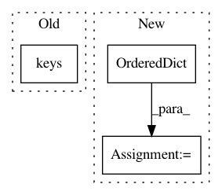

889d2fb5679c6f7cbd5ed91428242edb5f497d95,anvio/profiler.py,BAMProfiler,generate_variabile_codons_table,#BAMProfiler#,292
Before Change
entries = zip(*split.SCV_profiles[gene_callers_id].values())
for entry in entries:
entry_dict = dict(zip(split.SCV_profiles[gene_callers_id].keys(), entry))
variable_codons_table.append(entry_dict)
variable_codons_table.store()
After Change
for gene_callers_id in split.SCV_profiles:
// We reorder to the profiles in the order they will appear in the output table
split.SCV_profiles[gene_callers_id] = OrderedDict(
[(col, split.SCV_profiles[gene_callers_id][col]) for col in t.variable_codons_table_structure[1:]]
)
entries = zip(*split.SCV_profiles[gene_callers_id].values())
for entry in entries:
self.variable_codons_table.append(entry)
In pattern: SUPERPATTERN
Frequency: 3
Non-data size: 3
Instances
Project Name: merenlab/anvio
Commit Name: 889d2fb5679c6f7cbd5ed91428242edb5f497d95
Time: 2020-03-01
Author: kiefl.evan@gmail.com
File Name: anvio/profiler.py
Class Name: BAMProfiler
Method Name: generate_variabile_codons_table
Project Name: bambinos/bambi
Commit Name: 4d918855be2e85d6b716dbc4a985272c73b04568
Time: 2017-03-23
Author: jake.a.westfall@gmail.com
File Name: bambi/backends/pymc.py
Class Name: PyMC3BackEnd
Method Name: _convert_to_results
Project Name: merenlab/anvio
Commit Name: 889d2fb5679c6f7cbd5ed91428242edb5f497d95
Time: 2020-03-01
Author: kiefl.evan@gmail.com
File Name: anvio/profiler.py
Class Name: BAMProfiler
Method Name: generate_variabile_nts_table